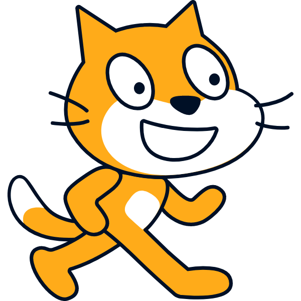

Scratch

Scratch는 비주얼 프로그래밍 언어로, 블록 코딩의 대표주자입니다.
저연령층이나 초보자들도 배우기 쉽고, 초보자들의 게임, 애니메이션 등의 창의성을 발휘하기에 좋은 언어입니다.
웹 브라우저 상에서 동작하기 때문에, 독립형 프로그램을 만들지 않아도 쉽게 접근이 가능합니다.
대규모 프로젝트나 실무에서는 한계가 있기 때문에, 대부분의 사용자는 소규모 토이 프로젝트를 구현하거나,
초보 개발자들이 프로그래밍의 기본 구조에 대해 이해할 수 있도록 지원하기 위해 사용됩니다.
해당 그래프는 공식적인 자료가 아닙니다. 단순 참고용으로만 사용해주시길 바랍니다.
정적/동적 타이핑의 경우 음수일 경우 동적 타이핑, 양수일 경우 정적 타이핑을 지원하는 지표로 나타내었습니다.
Scratch 공식 웹 사이트로 바로가기?
설명: 위 코드는 Scratch로 작성된 기본 "Hello, World!"를 출력하는 코드입니다.
프로그래밍 언어 추천 테스트로 돌아가기